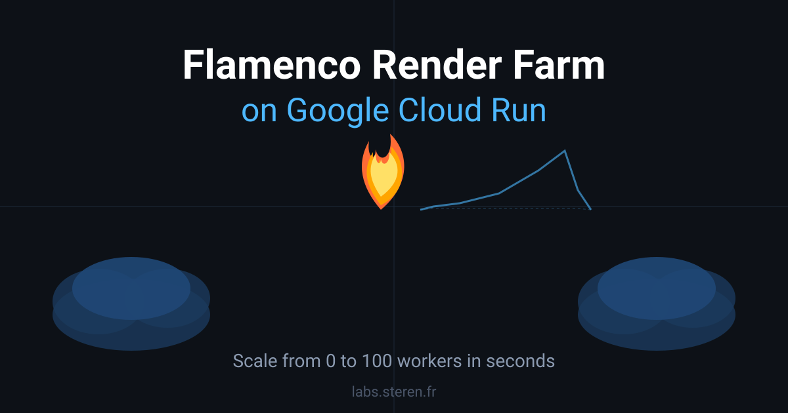
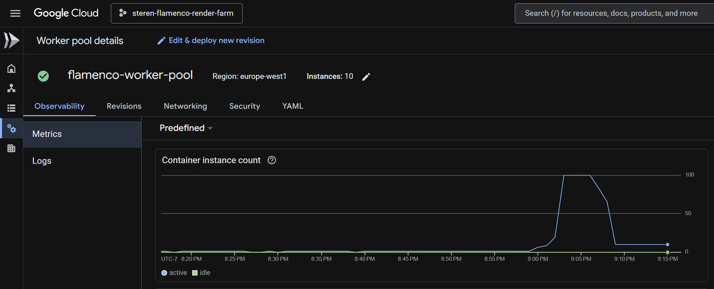

Flamenco Render Farm on Google Cloud Run

I deployed a Blender render farm to Google Cloud Run worker pools. Each worker renders a frame of a video scene. I can go from 0 to 100 and back to 0 workers — even with GPUs — in just a few seconds as needed.
What is Flamenco?
Flamenco is an open-source render farm manager developed by the Blender Foundation. It coordinates distributed rendering jobs across a fleet of workers: you submit a job (a Blender scene), and Flamenco splits it into tasks — one per frame — distributing them across all available workers. A web-based manager UI lets you monitor jobs, inspect task status, and see rendered previews in real time.
Architecture on Cloud Run
Flamenco has two components: a Manager and one or more Workers. I deployed each as a Cloud Run service using Terraform infrastructure-as-code:
- Flamenco Manager — a standard Cloud Run service that scales between 0 and 1 instances. It serves the web UI, receives job submissions, and dispatches tasks to workers. It scales to zero when idle so you pay nothing when not rendering.
- Flamenco Worker Pool — a Cloud Run worker pool with up to 10 instances per deploy (8 vCPU, 32 GB RAM each). Workers register with the Manager on startup, poll for tasks, run Blender to render frames, and write output to Cloud Storage.
- Cloud Storage bucket — shared storage mounted into both the Manager and Workers, used for Blender job files, render outputs, and Flamenco configuration.
The Terraform config provisions all of this — Cloud Run services, the storage bucket, a dedicated service account with objectAdmin permissions — in one terraform apply.
Workers spin up instantly
The key advantage of using Cloud Run worker pools is the elastic scaling. When a job is submitted, I can scale the worker pool from 0 to 100 instances in seconds. Once the render is complete, workers go idle and the pool scales back down. The Cloud Console shows this clearly:

Flamenco in action
Here is the Flamenco Manager web UI showing workers coming online. Each Cloud Run instance registers as a worker named localhost, transitioning from offline to awake within seconds of the pool scaling up:

Once workers are awake, Flamenco distributes frame render tasks across them in parallel. The Jobs view shows active and completed tasks, with a live preview of the latest rendered frame:

Deploy it yourself
The full infrastructure-as-code is on GitHub at github.com/steren/flamenco-cloud-run. To deploy your own Flamenco render farm:
- Install the Terraform CLI and Google Cloud CLI.
- Create a Google Cloud project and enable the Cloud Run, Cloud Storage, and IAM APIs.
- Clone the repo and run
terraform init. - Create a
terraform.tfvarswith yourproject_id. - Run
terraform apply— it provisions the bucket, service account, Manager, and Worker pool.
Pre-built container images are available at steren/flamenco-manager:latest and steren/flamenco-worker:latest, or you can build your own with the included build-and-push.sh script.